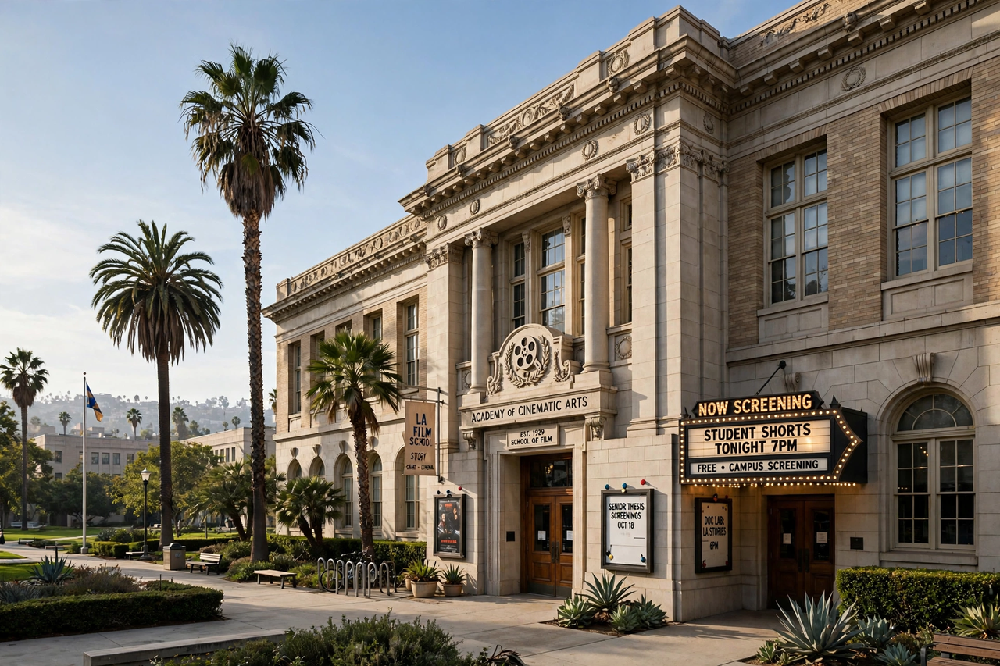

The American Film Institute (AFI) is an American nonprofit film organization founded in 1967 by the National Endowment for the Arts, following a directive from President Lyndon B. Johnson to preserve the heritage of American film and train the next generation of filmmakers. It is known for the AFI Conservatory, a graduate film school in Los Angeles, and for its widely publicised lists of great American films, notably the "100 Years…100 Movies" series.
| American Film Institute | |
|---|---|
| Founded | 1967 |
| Type | Nonprofit film organization |
| Headquarters | Los Angeles, California |
| Known for | AFI Conservatory; AFI Life Achievement Award; AFI's 100 Years lists |
The AFI was established in 1967 with George Stevens Jr. as its founding director. Its Center for Advanced Film Studies opened in 1969 at the Greystone Mansion estate in Beverly Hills, with early fellows including Terrence Malick and David Lynch. The Conservatory later moved to a campus in the Los Feliz district of Los Angeles and grants a Master of Fine Arts; it is consistently ranked among the top film schools in the United States.
Since 1973 the AFI Life Achievement Award has honoured a single individual for a career in film; the first recipient was John Ford. Beginning with the centenary of American cinema in 1998, AFI issued a series of "100 Years" lists — including 100 Movies, 100 Stars, 100 Laughs, 100 Thrills and 100 Cheers — which have become a popular reference point in American film culture. AFI also runs the AFI Fest film festival in Los Angeles and the AFI Silver Theatre in Silver Spring, Maryland, and maintains the AFI Catalog of Feature Films, a scholarly record of American cinema.
See also: Cinema of the United States